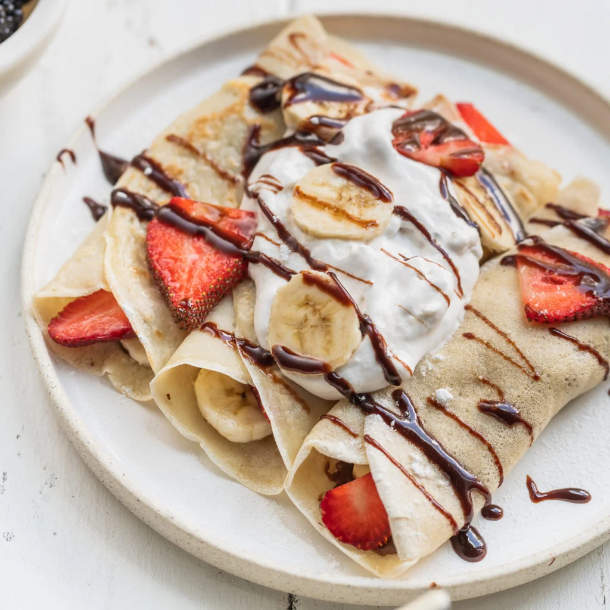

Crepes

Crepes are probably our favorite quick and easy sweet breakfast treat.
They come together faster than pancakes or waffles, and unlike those two other breakfast treats,
crepes are begging to be topped with more than just maple syrup. Fruit, nutella, gruyere cheese and mushroom
gravy are just some of the amazing topping options at your finger tips.
Ingredients:
- 1 c. all-purpose flour
- 2 large eggs
- 1 tbsp. granulated sugar
- 1/4 tsp. kosher salt
- 1 1/2 c. whole milk
- 1 tbsp. butter
- Fresh fruit, for serving
- Powdered sugar, for serving
Steps:
- In a large mixing bowl whisk the flour, sugar and salt until combined. Then create a well with flour and add the eggs.
Gradually pour in milk, whisking to combine after each addition. Let batter stand at room temperature until slightly bubbly on top, 15 to 20 minutes.
- In a small skillet over medium heat, melt butter. About 1/4 cup at a time, drop batter evenly onto pan, swirling it to evenly coat.
- Cook 2 minutes, then flip and cook 1 minute more. Repeat with remaining batter.
- Serve crêpes warm with fresh fruit and powdered sugar.